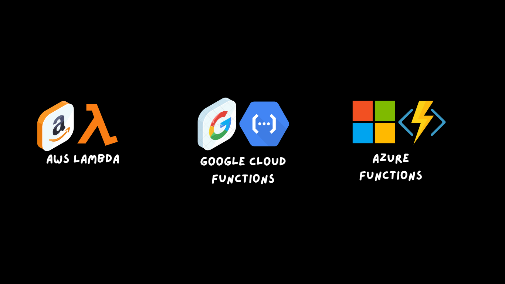

All of the major cloud providers have this Functions as a Service
This is essentially a computer platform for serverless where you run your functions.
FaaS
How work FaaS?
1) You pay for execution only.
2) Auto scalable
3) Faster time to market
4) Polyglot environment
5) All of the serverless apps are highly available
1) Security issues
2) Vendor lock-in
3) Debugging is more difficult